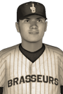

|
|
|  | Babin Is NL's Top Rookie Friday, October 14th, 1927 Jordan Babin, center fielder for the Juneau Brasseurs, has won the National League Rookie of the Year Award for 1927 after putting up a good freshman year. In 65 games, Babin hit at a .349 clip with 95 hits in 272 at-bats and 4 home runs, drove in 30 runs and scored 42 times. He received 16 first place votes, as a unanimous winner. Andrew Rimeaux of the Detroit Lions finished second in voting, while Zeshon Prescher of the Detroit Lions finished third. Player - Team - First Place - Total Points Jordan Babin - Juneau Brasseurs - 16 - 80 Andrew Rimeaux - Detroit Lions - 0 - 44 Zeshon Prescher - Detroit Lions - 0 - 20 |   |